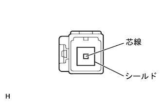

Navigation Antenna Assembly Inspection |
| 1. Navigation Antenna Assembly Inspection |
Navigation Antenna Assembly Installation Condition Inspection
Inspect the navigation antenna assembly cord for installation problems such as sharp bends or pinching.
 |
Resistance Measurement
Disconnect the connector shown in the illustration that is connected to the navigation antenna cord.
Using SST (Toyota electrical tester), measure the resistance between the core wire and shield terminals of the connector.
| Tester Connection | Condition | Standard |
|---|---|---|
| Core wire - Shield | Always | 50 to 500 Ω |